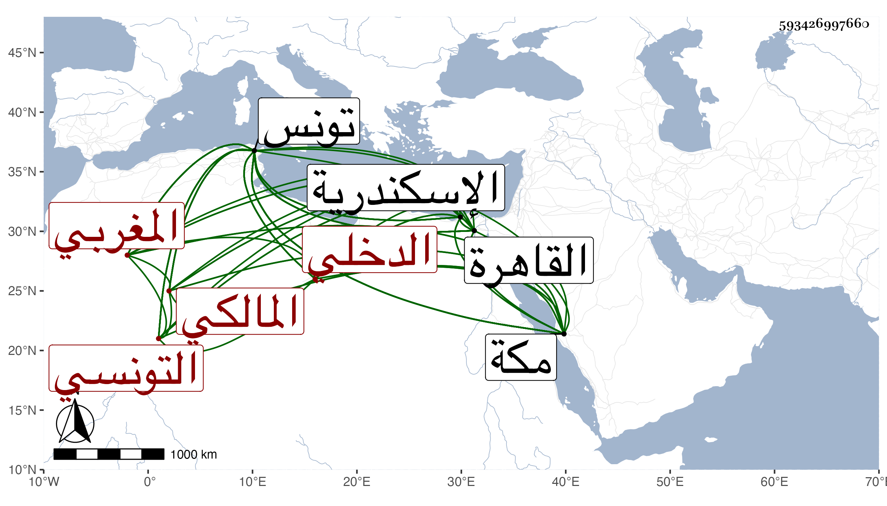

0902Sakhawi.DawLamic.ITO20230111-ara1.EIS1600.593426997660
Biography ID: 593426997660
467
أبو الكرم بن أحمد بن محمد بن محمد بن أحمد الدخلي الأصل التونسي المغربي المالكي ويسمى محمدا ولد في شعبان سنة ست وأربعين بتونس ونشأ بها فحفظ القرآن وجوده على أبيه والرسالة والجرومية وألفية ابن مالك وبعض اللامية في الصرف وبعض ابن الحاجب الفرعي وأخذ عن الشهاب السلاوي العربية وكان متميزا فيها وكذا عن إبراهيم الناجي ومحمد أبي عصانين والفقه عن أبي عبد الله محمد الزلديوي قاضي الأنكحة وولده الفقيه أبي الحسين محمد وهو الآن سنة تسع وتسعين حي وأبي عبد الله محمد الرصاع قاضي الجماعة بتونس في آخرين منهم قاضي الجماعة بتونس أيضا أبو عبد الله محمد بن أبي القسم القسنطيني المتقدم في التفسير وهو أيضا حي في محنته مع زكريا صاحب تونس والصالح أبي عبد الله محمد الخطاب وأخذ عنهم وعن غيرهم غير هذا وارتحل للحج في سنة سبع وسبعين فلقي باسكندرية قاضيها أبا البركات ابن ملك والشمس المالقي وخطيب جامع المغربي عبد الله وأخذ في القاهرة عن الأميني والأقصرائي والكافياجي ورافقه في الأخذ عنه ابن عاشر وعن السنهوري والعبادي وغيرهم وحج وزار ثم رجع إلى بلاده في التي تليها وعاد في سنة اثنتين وثمانين فاجتمع بأبي النجا بن الشيخ خلف وكاتبه بمنزله وسمع منه بعض الفتاوى وأقام بمكة بقيتها وجميع التي تليها وأخذ فيها عن البرهاني بن ظهيرة بعض الصحيح والشفا وقرأهما على عبد المعطي المغربي بل قرأ عليه منهاج العابدين وغيره وكتبا له إجازة وكان الذي كتبه البرهاني أنه وقع منه في أثناء سماعه وفي غيره من المجالس من الفرائد الرائقة والفوائد اللائقة والأبحاث الفائقة ما تتشنف به المسامع ويلقي القياد لها بلا مدافع مع العذوبة في الكلام والمشي في الأساليب على أوفق نظام وإفادة النقول العربية والتحاقيق العجيبة وسمع على زينب ابنة الشوبكي والنجم ابن فهد المسلسل وابن ماجه ومجلسا من أمالي أبي سهل بن زياد القطان وأسلاف النبي صلى الله عليه وسلم للمسيمي والقصيدة اللامية وفي أثناء المدة توجه للزيارة النبوية فدام أشهرا وحضر مجالس الشهاب الأبشيطي وقرأ الشفا على قاضيها الشمس بن القصبي المالكي وأخذ عن الشمس بن أبي الفرج المراغي أشياء بل سمع قبل ذلك على أبيه ثم عاد لبلاده وعقد فيها مجلس التذكير على العامة بجامع الزيتونة وهو جامع تونس الأعظم وببيت العابد محرز بن خلف وغيرهما وسافر منها في سنة ثمان وتسعين إلى القاهرة فاجتمع بالزيني زكريا بل اجتمع به قبلها وحضر مجالسه وبالديمي وركب البحر فوصل مكة في منتصف رجب من التي تليها ولقيني بها وحضر عندي بالمسجد الحرام وغيره وأنزله عبد المعطي بالمدرسة الكنبايتية وقرأ عليه وتكرر حضوره لمجلس القاضي وكثر ثناؤه على أبيه جدا وهو إنسان فاضل عارف مصاحب للطيلسان مظهر للاغتباط بي نفع الله به .
